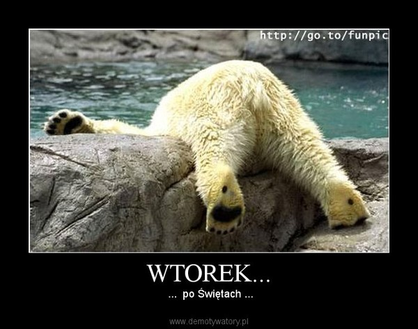

A few information about Thuesday
Wtorek – polski film komediowy z 2001 roku, wyreżyserowany przez Witolda Adamka. Scenariusz do filmu stworzyli Robert Brutter, Wojciech Jędrkiewicz oraz Witold Adamek. Zdjęcia powstały w kwietniu 2001, w Karczewie
